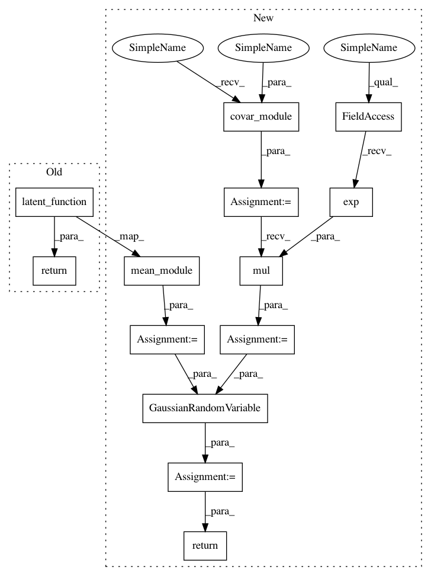

bce6052bd84a421a44bc590b1eda23923f63b951,test/examples/kissgp_additive_classification_test.py,GPClassificationModel,forward,#GPClassificationModel#Any#,39
Before Change
self.latent_function = LatentFunction()
def forward(self, x):
return self.latent_function(x)
def test_kissgp_classification_error():
gpytorch.functions.use_toeplitz = False
After Change
self.register_parameter("log_outputscale", nn.Parameter(torch.Tensor([0])), bounds=(-5, 6))
def forward(self, x):
mean_x = self.mean_module(x)
covar_x = self.covar_module(x)
covar_x = covar_x.mul(self.log_outputscale.exp())
latent_pred = GaussianRandomVariable(mean_x, covar_x)
return latent_pred
def test_kissgp_classification_error():
gpytorch.functions.use_toeplitz = False
In pattern: SUPERPATTERN
Frequency: 3
Non-data size: 13
Instances
Project Name: cornellius-gp/gpytorch
Commit Name: bce6052bd84a421a44bc590b1eda23923f63b951
Time: 2018-01-24
Author: gpleiss@gmail.com
File Name: test/examples/kissgp_additive_classification_test.py
Class Name: GPClassificationModel
Method Name: forward
Project Name: cornellius-gp/gpytorch
Commit Name: bce6052bd84a421a44bc590b1eda23923f63b951
Time: 2018-01-24
Author: gpleiss@gmail.com
File Name: test/examples/kissgp_kronecker_product_classification_test.py
Class Name: GPClassificationModel
Method Name: forward
Project Name: cornellius-gp/gpytorch
Commit Name: bce6052bd84a421a44bc590b1eda23923f63b951
Time: 2018-01-24
Author: gpleiss@gmail.com
File Name: test/examples/kissgp_gp_classification_test.py
Class Name: GPClassificationModel
Method Name: forward